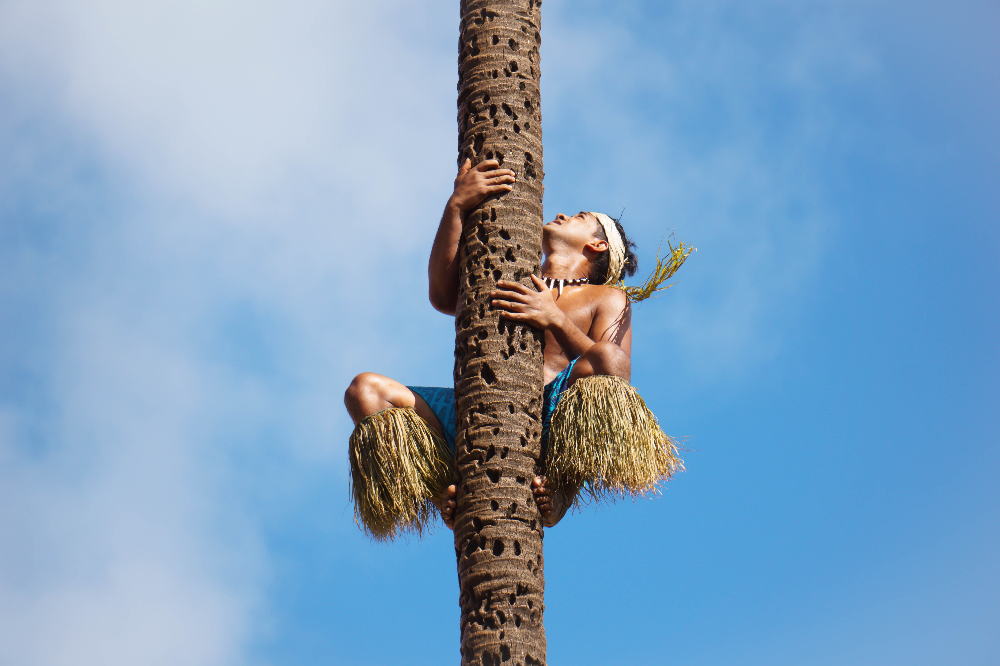
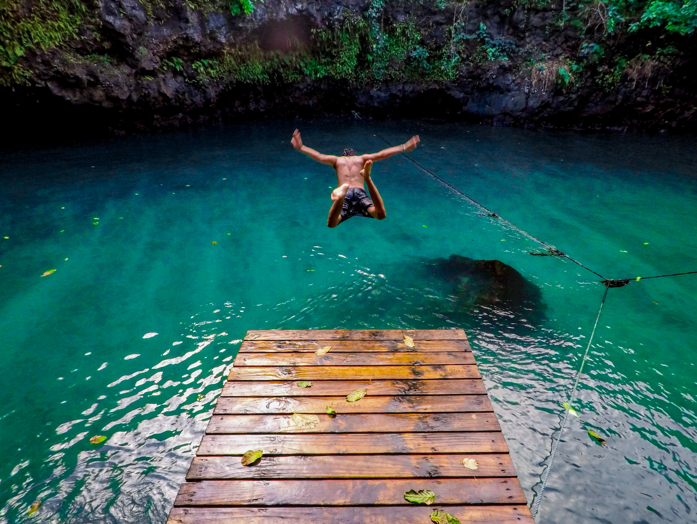

i am Samoan Samoa (/səˈmoʊə/), officially the Independent State of Samoa (Samoan: Malo Saʻoloto Tutoʻatasi o Sāmoa; Samoan: Sāmoa, IPA: [ˈsaːmoa]) and until 1997 known as Western Samoa, is a Polynesian island country consisting of two main islands (Savai'i and Upolu), two smaller, inhabited islands (Manono and Apolima), and several smaller, uninhabited islands, including the Aleipata Islands (Nu'utele, Nu'ulua, Fanuatapu and Namua). The capital city is Apia. The Lapita people discovered and settled the Samoan Islands around 3,500 years ago. They developed a Samoan language and Samoan cultural identity.
Samoa is a unitary parliamentary democracy with eleven administrative divisions. The sovereign state is a member of the Commonwealth of Nations. Western Samoa was admitted to the United Nations on 15 December 1976.[8] Because of the Samoans' seafaring skills, pre-20th-century European explorers referred to the entire island group (which includes American Samoa) as the "Navigator Islands.”[9][10] The country was occupied by the German Empire from 1899 to 1915, and by a joint British and New Zealand colonial administration until 1 January 1962, when it became independent.

i come from upolu Upolu is an island in Samoa, formed by a massive basaltic shield volcano which rises from the seafloor of the western Pacific Ocean. The island is 75 kilometres (47 miles) long and 1,125 square kilometres (434 square miles) in area, making it the second largest of the Samoan Islands by area. With approximately 145,000 inhabitants, it is by far the most populous of the Samoan Islands. Upolu is situated to the southeast of Savai'i, the "big island". Apia, the capital, is in the middle of the north coast, and Faleolo International Airport is at the western end of the island. The island has not had any historically recorded eruptions, although there is evidence of three lava flows, dating back only to between a few hundred and a few thousand years ago.
In the Samoan branch of Polynesian mythology, Upolu was the first woman on the island.

i come from the village of toouta and fasikoo uka Samoa was discovered and settled by the Samoans’ Lapita ancestors (Austronesian people who spoke Oceanic languages). New Zealand scientists have dated the earliest human remains found in Samoa to between roughly 2900 and 3500 years ago. The remains were discovered at a Lapita site at Mulifanua, and the scientists’ findings were published in 1974.[11] The Samoans’ origins have been studied in modern times through scientific research on Polynesian genetics, linguistics and anthropology. Although this research is ongoing, a number of theories have been proposed. One theory is that the original Samoans were Austronesians who arrived during a final period of eastward expansion of the Lapita peoples out of Southeast Asia and Melanesia between 2,500 and 1,500 BCE.[12]
Intimate sociocultural and genetic ties were maintained between Samoa, Fiji, and Tonga, and the archaeological record supports oral tradition and native genealogies that indicate inter-island voyaging and intermarriage between pre-colonial Samoans, Fijians, and Tongans. Notable figures in Samoan history included the Tui Manu'a line, Queen Salamasina, King Fonoti and the four tama-a-aiga: Malietoa, Tupua Tamasese, Mata'afa and Tuimalealiifano. Nafanua was a famous woman warrior who was deified in ancient Samoan religion and whose patronage was highly sought after by successive Samoan rulers.[13]
Today, all of Samoa is united under its two principal royal families: the Sā Malietoa of the ancient Malietoa lineage that defeated the Tongans in the 13th century; and the Sā Tupua, Queen Salamasina's descendants and heirs who ruled Samoa in the centuries that followed her reign. Within these two principal lineages are the four highest titles of Samoa - the elder titles of Malietoa and Tupua Tamasese of antiquity as well as the newer Mata'afa and Tuimalealiifano titles who rose to prominence in 19th century wars that preceded the colonial period.[13] These four titles form the apex of the Samoan matai system as it stands today.
Contact with Europeans began in the early 18th century. Jacob Roggeveen, a Dutchman, was the first known non-Polynesian to sight the Samoan islands in 1722. This visit was followed by French explorer Louis-Antoine de Bougainville, who named them the Navigator Islands in 1768. Contact was limited before the 1830s, which is when English missionaries, whalers and traders began arriving.[14]